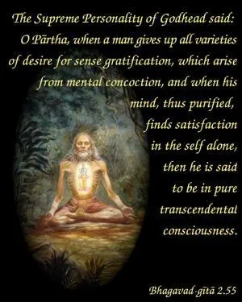
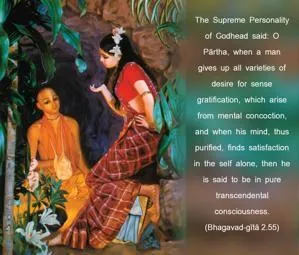

The Supreme Personality of Godhead said: O Pārtha, when a man gives up all varieties of desire for sense gratification, which arise from mental concoction, and when his mind, thus purified, finds satisfaction in the self alone, then he is said to be in pure transcendental consciousness.


The Bhāgavatam affirms that any person who is fully in Kṛṣṇa consciousness, or devotional service of the Lord, has all the good qualities of the great sages, whereas a person who is not so transcendentally situated has no good qualifications, because he is sure to be taking refuge in his own mental concoctions. Consequently, it is rightly said herein that one has to give up all kinds of sense desire manufactured by mental concoction. Artificially, such sense desires cannot be stopped. But if one is engaged in Kṛṣṇa consciousness, then, automatically, sense desires subside without extraneous efforts. Therefore, one has to engage himself in Kṛṣṇa consciousness without hesitation, for this devotional service will instantly help one onto the platform of transcendental consciousness. The highly developed soul always remains satisfied in himself by realizing himself as the eternal servitor of the Supreme Lord. Such a transcendentally situated person has no sense desires resulting from petty materialism; rather, he remains always happy in his natural position of eternally serving the Supreme Lord.